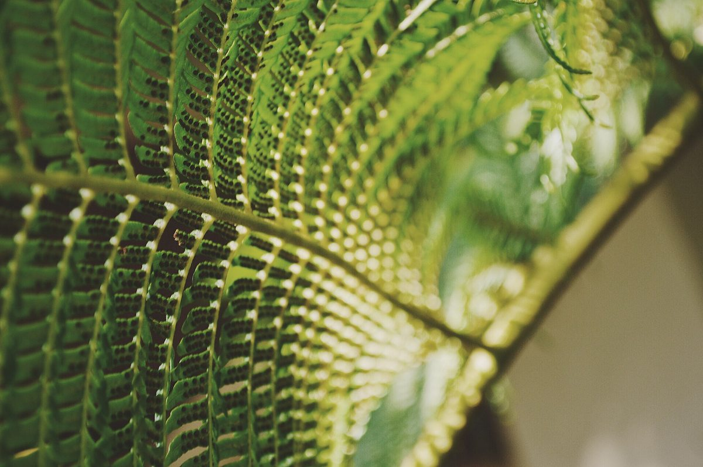
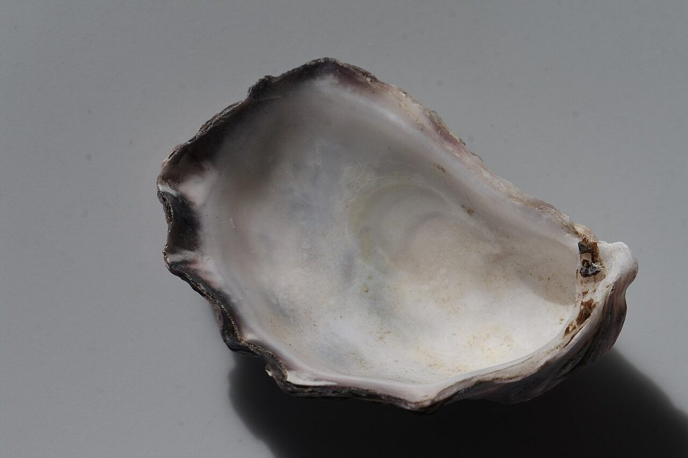
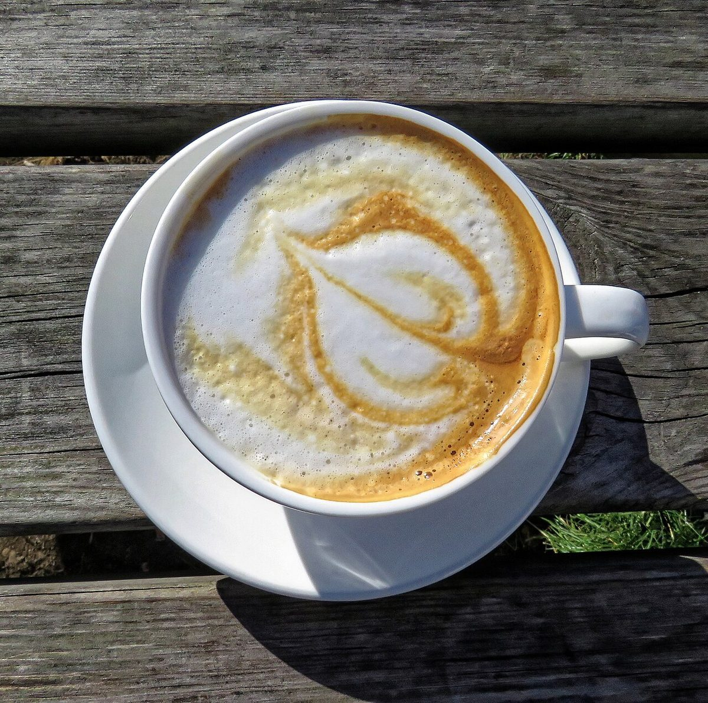

2号車
店のこと
お店について確認できているのは、所在地とInstagramのアカウントだけです。
このページの「想像してみる」部分は、制作側が想像して書いたものです。お店の実際の様子・考え・メニューとは関係がありません。
確認できていること
- 店名は「くるくるカフェ」、業種はカフェ
- 所在地は岩手県奥州市水沢南町1-12(〒023-0851)
- 電話番号はなし。連絡はInstagramから
- 営業時間・定休日・メニュー・価格・ご予約・駐車場は準備中

想像してみる(制作側の連想)

観覧車のゴンドラは、ぐるっとひと回りして、また最初の場所に戻ってきます。カフェも、ふらりと立ち寄って、ひと息ついて、また日常へ戻っていく場所。そんな共通点を勝手に感じました。
ひと回りするあいだ、窓の外の景色は少しずつ変わります。お店でどんな時間が流れているのかは、Instagramで確かめてみてください。
写真は、丸いものを中心に選んだイメージです。泡の粒、丸いパン、カップの縁。お店で実際に出されるものではありません。
